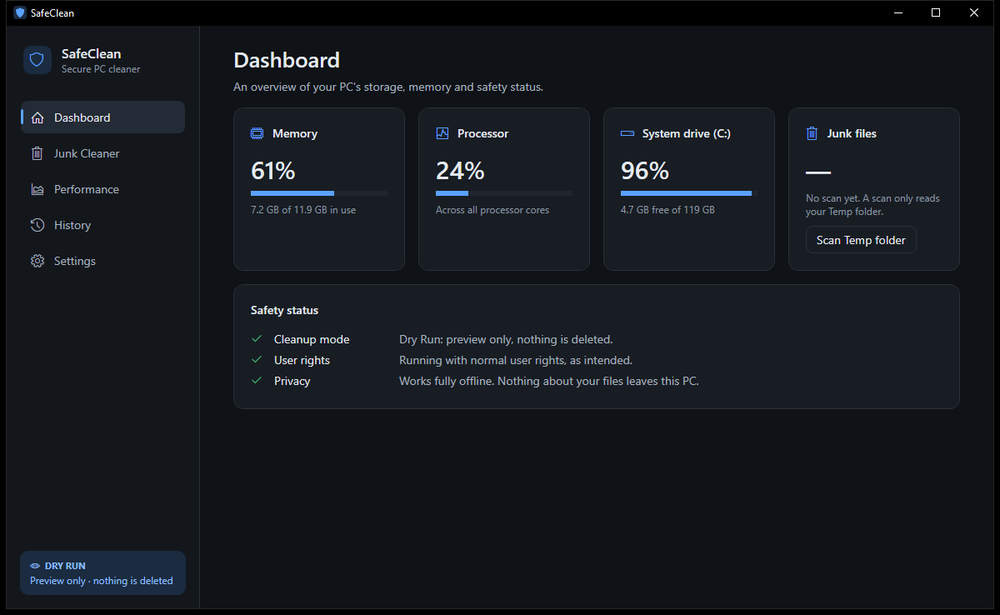
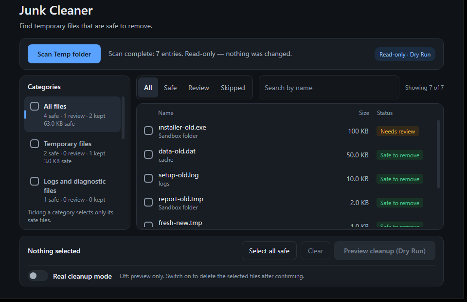
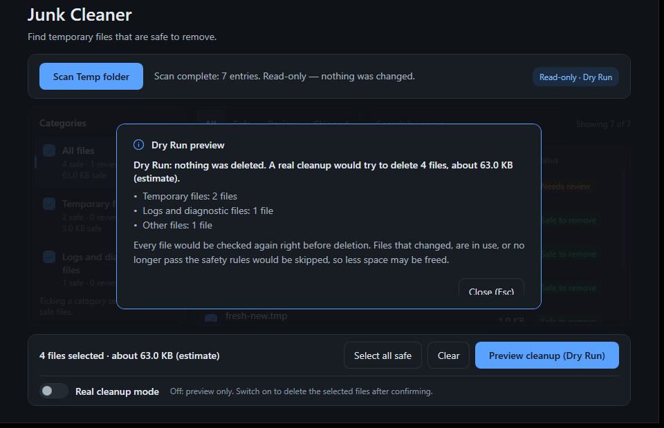

Starts in preview mode
Dry Run is on every time the app opens. Scanning only reads your files, and a preview changes nothing.
SafeClean shows you every file it finds and why it would or wouldn't remove it. Nothing is deleted until you turn on Real mode, pick the files and confirm.
Please extract the ZIP before running it. Windows may show a warning the first time, because the app isn't code-signed. See how to install.

When SafeClean isn't sure about a file, it keeps it.
Dry Run is on every time the app opens. Scanning only reads your files, and a preview changes nothing.
Deleting takes three steps: switch on Real mode, select files and confirm. Cancel is the default answer, and Real mode turns itself off after each cleanup.
Right before deleting, SafeClean re-checks every file. Anything that changed, is in use or no longer passes the rules is skipped and kept.
It only offers files in your own Temp folder that are at least 7 days old. Your personal folders, Windows and program folders are protected.
The app makes no network connections and sends nothing about your files anywhere. Its logs stay on your PC.
“Space freed” counts only files that were really deleted. There's no fake speed score and no “RAM cleaner”.
Every file gets a status and a reason. These screens use made-up test files.


There's nothing to install and no need for administrator rights.
SafeClean-1.0.0-win-x64.zip (54 MB).
In PowerShell, in the folder with the ZIP, run:
Get-FileHash .\SafeClean-1.0.0-win-x64.zip -Algorithm SHA256The result must match this value exactly. If it doesn't, don't run the program.
57a3669676abc725cb4af949aaf5b22fa6fc57c3529eda1b0b8df5f5ad9f7155The same value is on the release page.
Right-click the ZIP and choose Extract All… This step matters: the app needs the files beside it, and without them it closes with no message.
Please don't use “Run as administrator”, because SafeClean turns cleanup off when it runs that way.
SafeClean is free and has no paid code-signing certificate, so Windows SmartScreen doesn't recognise it and may show this warning. The warning doesn't mean a virus was found, and it doesn't prove the file is safe. If your checksum matches and you trust this source, choose More info, then Run anyway.
To remove it: close SafeClean and delete the folder you extracted. To remove its settings, history and logs too, delete %LOCALAPPDATA%\SafeClean. It adds no startup entries, services or registry settings.